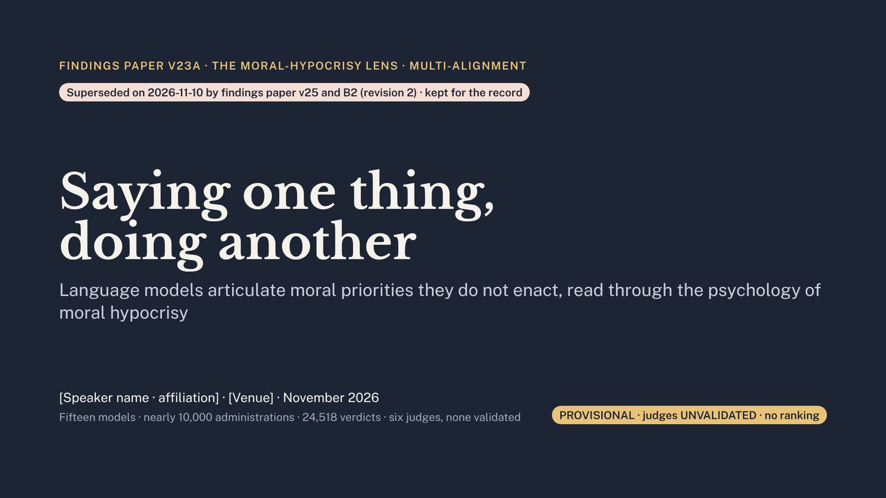

30 slidesfindings paper v23A (moral-hypocrisy lens, full edition). Superseded 2026-11-10 by findings paper v25 and B2 (revision 2); kept for the record.for: conference talk, AI and moral-psychology audiencesdownload as PDFback to the hub

Slide 1 of 30 · use the arrow keys or the buttons
Speaker notes are shown beside each slide. PROVISIONAL · judges UNVALIDATED · no ranking.